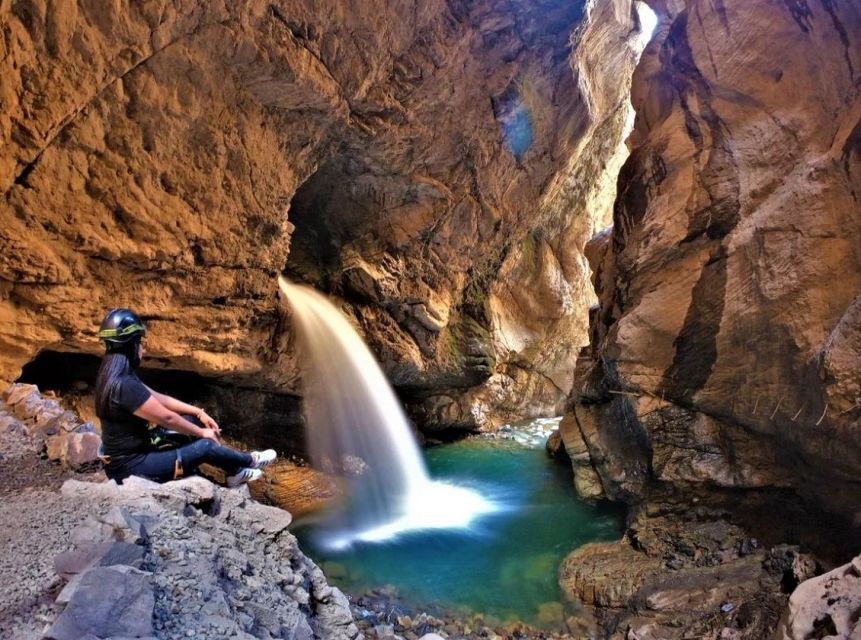

Lima: Cañón de Autisha - Explora el Centro de la Tierra
Precio: $55.00(por persona)
Ubicación: Ver en Google Maps
Descripción
Sumérgete en una de las gargantas más profundas de Perú haciendo senderismo subterráneo y descenso en rappel por el Cañón de Autisha, de 55 m de altura. También existe la posibilidad de hacer puenting.
Detalles
- Horario: Entrada a partir de las 8:00 am
- Guia: Ingles y español
- Duración: 2 horas
Reservas y Contacto
Para reservar tu lugar en esta emocionante excursión, contáctanos por teléfono al +51 123 456 789 o por correo electrónico a info@exploraperu.com.